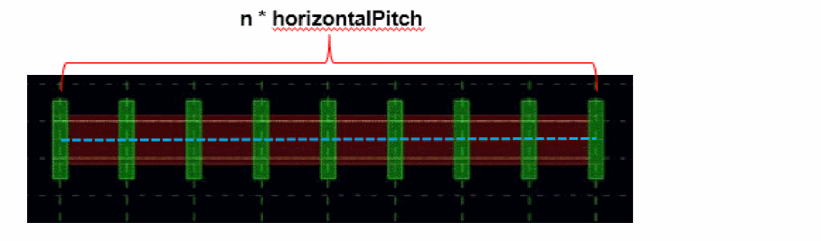
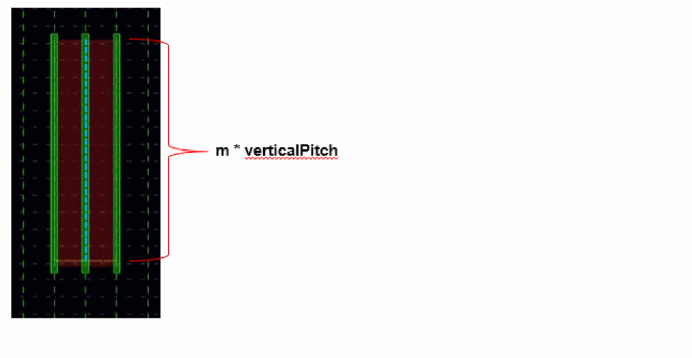
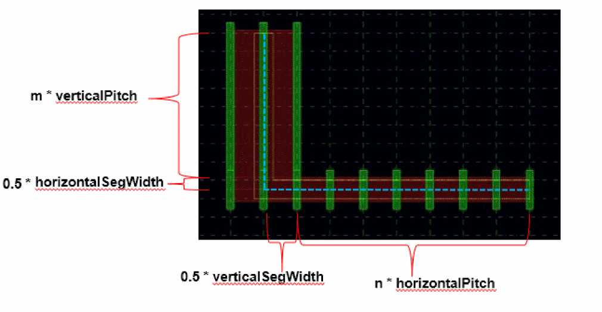
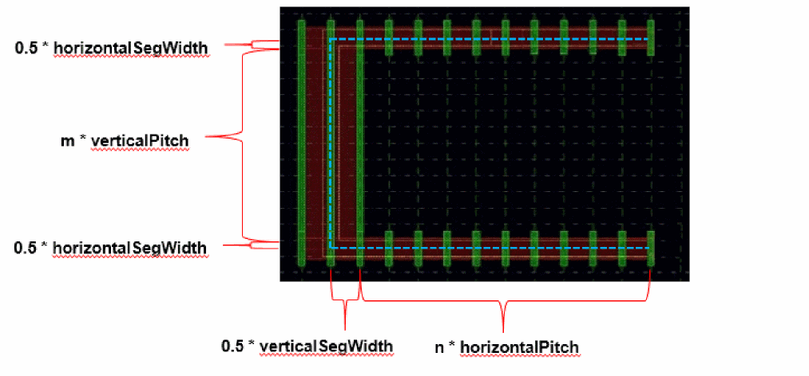
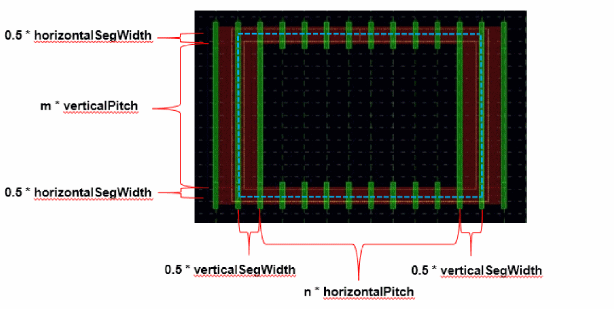

3
Pitch Support in Fluid Guard Ring
Overview of Pitch and Grid
Virtuoso has been enhanced in order to help layout engineers working on FinFET processes to improve their productivity. A new construct, snapPatternDef, has been defined in the technology file to capture width and spacing rules of layers in FinFET processes that have a grid-like nature. For more information, see
The snapPatternDefs are defined in the technology file. When designing custom FGR, the VFO infrastructure is not aware of the drawn layers. Hence, the snap pattern information in the technology file or layout canvas cannot be associated to the FGR. So, for the fluid shape to adhere to the snapPatternDefs, four new parameters have been introduced. They are horizontalPitch, verticalPitch, horizontalSegWidth, and verticalSegWidth.
The example below illustrates a simple snapPatternDef specifying global and local, fin and poly grids.
In the above example, the global fin grid starts at the origin axis, or PR boundary, if the PR boundary does not coincide with the origin axis, plus the offset value. Also, if there is a snap pattern, the instance is snapped using the snap pattern, else it is snapped using the shape in the snapping layer.
The example below illustrates a snapPatternDef specifying global and local fin grids.
Calculating the Fluid Shape Data using Pitch Parameters
Pitch support has been added for horizontal and vertical direction. For this functionality, four CDF and formal parameters, horizontalPitch, verticalPitch, horizontalSegWidth, and verticalSegWidth, have been added. The parameters, horizontalPitch and verticalPitch, map layer-specific pitch values to the fluid shape pitch in horizontal and vertical directions. Typically, horizontalPitch is mapped to poly pitch and verticalPitch is mapped to fin pitch. Apart from the pitch parameters, horizontalSegWidth and verticalSegWidth parameters are also required to calculate accurate fluid shape segment lengths. This is because the segment widths are mapped to a number of poly lines and fins. Also, the segment lengths for fluid shape depends on number of poly lines and fins, as described in the next section.
Currently, pitch support has been added for the path shape type. A path has a centerline and width. Pitch calculations for center line and width are described below.
Calculating the Centerline of Path Style Fluid Shape using Pitch Parameters
This section describes how centerline for path style fluid shape is calculated using pitch parameters. The path style fluid shape with no corner, one corner, and two corners are described below.
-
No corner
Horizontal Segment Length = n * horizontalPitch
n is the pitch multiplier
Vertical Segment Length = m * verticalPitch
m is the pitch multiplier
 -
One corner
Horizontal Segment Length = n * horizontalPitch + 0.5 * verticalSegWidth
Vertical Segment Length = m * verticalPitch + 0.5 * horizontalSegWidth
n and m are the pitch multipliers

-
Two Corners (Open Ends)
Horizontal Segment Length = n * horizontalPitch + verticalSegWidth
Vertical Segment Length = m * verticalPitch + horizontalSegWidth
n and m are the pitch multiplier

-
Two Corners (Ring Style)
Horizontal Segment Length = n * horizontalPitch + verticalSegWidth
Vertical Segment Length = m * verticalPitch + horizontalSegWidth
n and m are the pitch multiplier

Calculating the Width of Path Style Fluid Shape using Pitch Parameters
The path width for path style fluid shape is calculated as described below:
horizontalPitch + verticalSegWidth) or (verticalPitch + horizontalSegWidth), the VFO infrastructure snaps the shape point to the closest valid point, as per the calculations provided in the Calculating the Centerline of Path Style Fluid Shape using Pitch Parameters section.Return to top